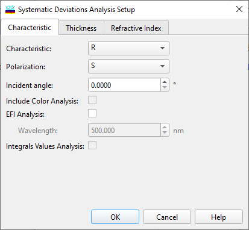

Systematic Deviations Characteristics
Systematic Deviations Characteristics
Use the Characteristics page of the Systematic Deviation Setup window to set spectral characteristics for the Systematic Deviations analysis. Systematic Deviations analysis can only be performed for one characteristic, one polarization state, and one angle of incidence at a time. As in the other OptiLayer dialogs, in Angular mode, the choice of angle of incidence is replaced by the choice of wavelength.

It is possible to include Color Analysis in order to evaluate the changes of color characteristics due to Systematic Deviations. If this option is selected, an additional Color Systematic Deviation Evaluation window will be opened.
The EFI Analysis option allows you to open the EFI Systematic Evaluation window and study the effect of systematic deviations on the electric field in the design cross-section.
It is also possible to include Integrals and Values in order to evaluate the changes of any characteristics specified in the Integrals and Values window due to Systematic Deviations. If this option is selected, an additional Integrals, Values Systematic Evaluation window will be opened.
The OK button accepts specified data and initiates the Systematic Deviations Analysis procedure. Its results are displayed in the Systematic Deviations window.
See also: